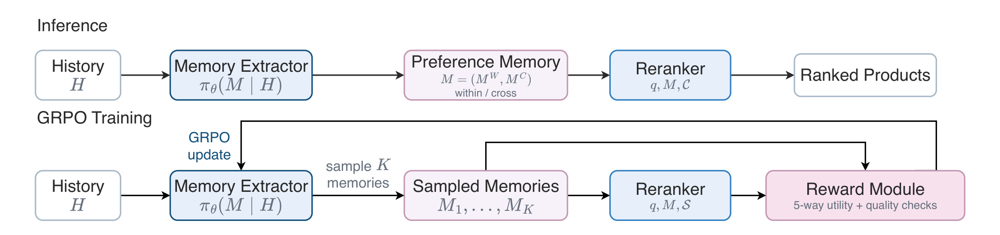
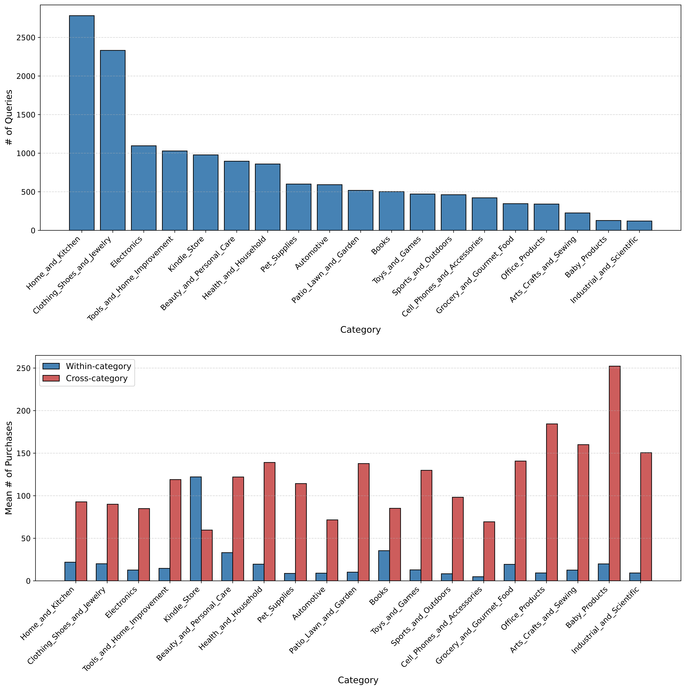
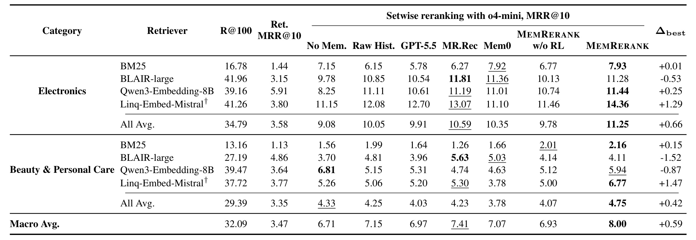
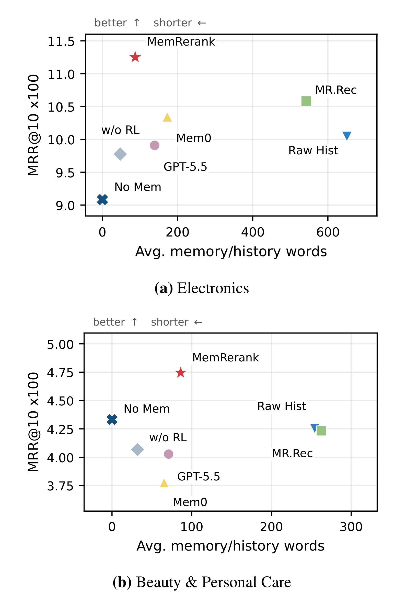
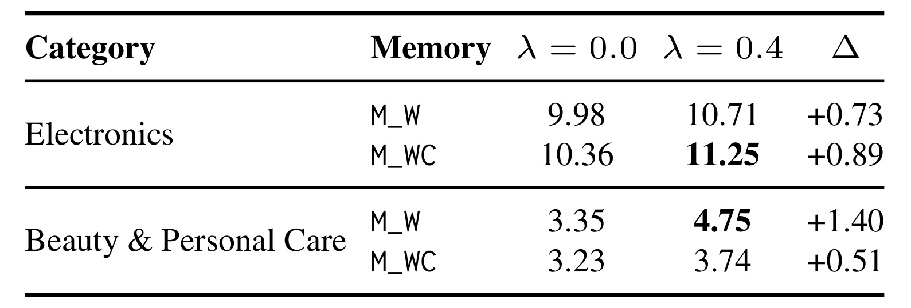
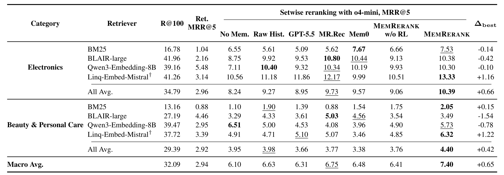

MemRerank：面向个性化商品重排的偏好记忆
《MemRerank: Preference Memory for Personalized Product Reranking》由 Santa Clara University 的 Zhiyuan Peng、Yi Fang 与独立研究者 Xuyang Wu、Huaixiao Tou、Yu Gong 合作完成；当前精读依据 arXiv:2603.29247 v3（2026-06-17）。论文把用户购买历史压缩成可跨查询复用的、查询无关的偏好记忆，再用下游 LLM 重排效果反向训练记忆抽取器。作者声明发布 benchmark 与代码，并给出 Hugging Face 数据集地址，但本轮未核验到独立代码仓库，数据集页面也未能稳定访问，因此以下讨论以论文 PDF、LaTeX 源码和作者主页为准。
1. 背景和问题
1.1 从“把历史塞进提示词”到可复用偏好记忆
大模型进入电商搜索后，个性化不再只有“训练一个 user embedding”这一条路线。购物 Agent 可以接收自然语言查询、调用检索器、读取用户历史，再由 LLM 在候选商品之间推理。表面上最直接的做法，是把用户过去买过的商品全部拼到重排 prompt：查询告诉模型“现在要什么”，历史告诉模型“这个人通常喜欢什么”，候选集则提供本次选择空间。但长历史并不等于高质量个性化信号。购买记录中有一次性需求、礼物、家庭成员代购、跨品类噪声和大量冗余商品描述；把它们原样送入模型，会扩大上下文与 API 成本，也可能让真正稳定的品牌、预算、兼容性和品质偏好被淹没。
这使问题从“LLM 能否读历史”转成“应该把什么历史压缩成什么记忆”。一个合格的长期偏好表示至少要满足四点。第一，短：不能与历史长度线性增长，否则只是换一种拼接方式。第二，有证据：偏好必须由真实购买元数据支撑，而不是模型根据人口属性或常识猜测。第三，可操作：记忆要能帮助候选排序，例如“优先 USB-C 兼容设备”比“用户喜欢电子产品”更有区分力。第四，可复用：如果每条查询都重新摘要全部历史，系统仍会承担高延迟和高成本；更理想的是对用户历史预计算一次，在未来多次搜索中复用。
MemRerank 正是围绕第四点作出关键选择：它生成 query-independent preference memory。记忆抽取器只看目标交互之前的用户历史，不看本次查询和候选商品。查询相关性仍由下游重排器负责，记忆只提供较稳定的个体偏好。这个解耦有明确的系统意义：历史压缩可以离线或异步完成；一份记忆可供多个查询、多个候选池甚至不同第一阶段检索器使用；当历史新增时再增量刷新，而不必每次请求都重新总结。
1.2 论文真正回答的三个问题
论文不是泛泛证明“有记忆比没记忆好”，而是提出三个更具体的问题。
第一，偏好记忆怎样得到任务级监督？购买历史没有天然的“金标准偏好摘要”。若只做监督微调，需要人工写大量用户画像；若只让强 LLM 零样本摘要，格式可能漂亮，却未必真正改善商品排序。MemRerank 以重排器是否选中正例作为反馈，让记忆抽取器针对最终用途优化。也就是说，记忆不是为了忠实复述历史，而是为了提高候选判别能力。
第二，局部、廉价的训练反馈能否迁移到完整 top-100 重排？对每个采样记忆都完整重排 100 个商品代价很高。作者把一次奖励计算压缩成五候选任务：一件正例加四件从 top-100 不同排名区间抽出的负例；重排器对同一输入回答五次，正例选择率作为效用。最终评测却是在固定 top-100 候选池上进行。论文要验证的核心桥梁，就是 5-way utility 是否足以训练出对完整重排有效的记忆。
第三，跨品类历史什么时候是信息，什么时候是噪声？电子产品中的品牌生态、接口、耐用性与预算偏好，可能从手机配件迁移到电脑外设；但美妆之外的购买记录未必能帮助判断护肤或个护商品。论文因此区分类内记忆 $M_W$ 与跨类记忆 $M_C$，并比较只用类内的 $M_W$ 和同时使用两者的 $M_{WC}$，而不是假设“历史越多越好”。
1.3 与个性化搜索、记忆 Agent 和传统用户画像的区别
传统个性化商品搜索通常联合学习 query、user 与 product 的向量，或训练类别感知、多兴趣、评论匹配模型。它们的优势是端到端且推理高效，但用户表示往往嵌在特定模型参数或 latent vector 中，不容易让通用 Agent 直接读取、审计和迁移。近期 LLM 个性化方法会先检索与候选相关的用户偏好，或按当前查询细化用户信息；这种 query-aware 路线通常更聚焦当前需求，却意味着每次查询都要执行一次偏好检索或重写。
通用 Agent 记忆系统如 Mem0 更强调从长期交互中提取原子事实、合并冲突和按需检索；推荐类记忆工作则尝试联合优化记忆与推理。MemRerank 的范围更窄，也因此更容易评估：它不解决开放域对话记忆，不维护复杂时间线，而是把“目标交互之前的购买历史”转成“能否提高固定候选池重排”的可测任务。所有方法面对同一 top-100 候选池和同一下游 setwise 重排器，差异主要来自记忆构造。这个控制设计避免把更强召回器、更大重排器或不同候选池的收益误算成记忆收益。
同时，论文中的 preference memory 不是传统静态画像。它保留类别结构，要求每条偏好带历史证据，并通过下游排序反馈学习。它也不是简单缓存：缓存保存过去结果，MemRerank 保存的是从行为中抽象出的决策驱动因素。真正的研究命题可以概括为：能否把长而杂的行为历史变成短而有用的中间表示，并用最终任务表现而不是摘要相似度来训练这个表示？
2. 方法
2.1 问题形式化与数据时间线
设用户在目标商品交互之前的购买历史为 $H$。记忆抽取器是一个参数为 $\theta$ 的策略：
它把历史映射为偏好记忆 $M$。论文进一步把记忆拆成：
其中 $M_W$ 汇总与目标商品同类别的历史偏好，$M_C$ 汇总其他类别中可迁移的购物偏好。论文比较两个输出目标：$M_W$ 只抽取类内记忆并令跨类块为空；$M_{WC}$ 同时抽取 $M_W$ 和 $M_C$。这里的“目标类别”来自正例商品类别，但抽取内容不使用当前查询，因此记忆在同类别未来请求之间可以复用。
数据时间线是方法可信度的第一道门槛。Amazon-C4 的每条复杂搜索查询源于一条五星评论改写，并关联被评论商品，论文把该商品视为正例 $d^+$。作者在 Amazon-Review-2023 中恢复同一用户的历史购买，只保留发生在目标商品交互之前的记录，并从历史中移除 $d^+$。形式上可写成：
$t_i$ 是历史商品交互时间，$t_q$ 是正例对应交互时间。这个过滤避免最严重的信息泄漏：如果正例本身留在历史里，抽取器只需复制商品特征，重排器就能“认出答案”。作者还要求评测查询至少有一条有效类内历史；这意味着论文衡量的是“已有同类购买证据时，偏好记忆能否改善重排”，不能直接外推到纯冷启动用户。
原始 Amazon-C4 查询含有评论式细节，并不完全像真实搜索词。论文沿用 MR.Rec 设置，用 o3-mini 把查询改写成一句自然表达，仅保留一个核心商品和一个核心用途，删除品牌、规格、价格与个人偏好。这样做意在把个体偏好从 query 中剥离，让它只能由历史记忆提供。不过，这也引入一个需要牢记的评测假设：查询由商业 API 模型改写，可能改变原始难度，且真实用户往往会在查询中明确写出品牌或规格。
2.2 整体框架：抽取器、记忆、重排器与训练闭环
MemRerank 有推理和训练两条路径。推理时，历史 $H$ 经过记忆抽取器得到一份偏好记忆 $M$；下游重排器接收查询 $q$、记忆 $M$ 与候选集 $C$，输出商品排序。候选集固定为第一阶段检索器从全商品语料取回的 top-100：
训练时，抽取器不只生成一份记忆，而是从策略中采样一组 $K$ 个候选：
每个候选记忆都送入同一个下游重排任务得到奖励，GRPO 根据组内相对好坏更新抽取策略。这样不需要人为定义“正确摘要文本”，只需比较哪些记忆更能帮助重排器选对商品。

Figure 1 的上半行是部署时真正运行的链路：History → Memory Extractor → Preference Memory → Reranker → Ranked Products。记忆位于用户行为与排序模型之间，是一个显式、可审计的中间层。下半行则把重排器变成奖励模型：同一历史采样多份记忆，分别与查询及五候选集合组成 prompt，reward module 汇总 5-way utility 与质量检查，再把相对奖励传回抽取器。图中最重要的不是“用了 GRPO”，而是监督信号跨越了中间文本：抽取器生成自然语言偏好，但评价标准来自最终排名决策。
这一结构也刻意冻结了下游重排器。论文关注的是记忆策略，而不是联合训练一个更强的排序模型。如果抽取器与重排器一起更新，收益来源会难以分离；固定 o4-mini 后，任何提升更可能说明输入记忆提高了可判别信息。但固定专有模型也带来复现风险：API 版本、采样行为和服务更新都可能改变奖励分布。
2.3 类内/跨类历史与结构化记忆格式
对每个用户，作者先按商品类别分组历史。与正例类别相同的购买构成 within-category history，其余构成 cross-category history。这个分桶不是简单工程技巧，而是在偏好迁移与噪声之间建立显式开关。类内历史更接近当前商品空间，适合抽取品牌、功能、材料、规格与使用场景；跨类历史则可能提供预算、质量预期、审美、便携性、耐用性或品牌生态等更通用的决策习惯。
$M_W$ 提示词要求抽取器基于商品标题和描述，从类内历史中发现 3–6 个证据最强、最有排序区分力的方面。每条记忆包含三个字段：短 aspect label、长度不超过 20 词的 actionable preference，以及 1–2 个从历史元数据逐字复制且每段不超过 10 词的 evidence。输出包在 <within_memory> 标签内，不允许额外文本。可以抽象成：
其中 $a_i$ 是偏好方面，$p_i$ 是可用于排序的偏好陈述，$E_i$ 是证据片段集合。若证据不足，可以少于三条，不能为了格式凑数。$M_{WC}$ 在此基础上增加跨类记忆块，格式逻辑相同。
这种格式约束解决了三个典型问题。其一，aspect 不能只是“features”或“style”这种泛词，必须具体到“noise cancellation”“USB-C”“minimalist design”等可判别维度。其二，evidence 把偏好绑定到输入片段，降低模型凭常识杜撰画像的空间。其三，actionable preference 明确告诉重排器应优先或避免什么，而不是仅复述买过哪些商品。
但论文在训练评分和最终重排前会删除 evidence 字段，仅保留偏好内容。原因是证据片段可能包含与正例或商品描述高度重合的词，既增加 prompt 长度，也可能让重排器走字符串匹配捷径。证据版记忆只用于审计。这形成了一个合理分工：抽取阶段以证据约束忠实度，消费阶段以紧凑偏好支持决策。复现时必须严格区分两种表示，否则把 evidence 留在评测 prompt 会改变论文口径。
下游重排 prompt 也规定了信号优先级。第一，候选必须先满足查询意图，query relevance 是主标准。第二，若有 $M_W$，用它判断候选是否符合该类商品的稳定偏好。第三，若有 $M_C$，只用来检查总体购物风格或打破接近候选之间的平局。这个层次很关键：个性化不能覆盖显式意图。例如用户平时买高端耳机，但这次搜索“儿童入门耳机”，重排器不能仅凭历史把昂贵专业型号置顶。
2.4 五候选 setwise 重排如何产生训练信号
完整 top-100 重排成本高，尤其每个历史要采样 $K$ 份记忆、每份还要多次调用奖励模型。作者因此构造五候选奖励实例：从固定 top-100 候选池中取正例 $d^+$，再取四个检索负例 $N_4$：
这不是随机从整个语料抽四个容易负例。四个负例按原始检索排名分桶：两个来自 1–20 名，一个来自 21–50 名，一个来自 51–100 名。前排负例通常与查询更相似，迫使记忆提供细粒度区分；中后排负例让训练覆盖完整候选池的难度分布。每个满足条件的 query-retriever 对，训练阶段采样 8 个这样的五候选实例，开发阶段采样 5 个。
给定采样记忆 $M_k$，奖励重排器接收 $(q,M_k,S)$，用完全相同的 prompt 独立回答五次。令第 $j$ 次返回的商品为 $a_j$，五路效用定义为：
$\mathbf{1}[\cdot]$ 是指示函数。若五次都选中正例，$u_5=1$；三次选中则为 $0.6$；全部失败则为 $0$。多次采样的作用是缓和 o4-mini 在 temperature 采样下的随机性，让奖励不由单次偶然输出决定。它仍是离散、低分辨率的信号，只能取 $\{0,0.2,0.4,0.6,0.8,1\}$，但 GRPO 依赖同组候选的相对差异，不要求连续可导奖励。
五候选任务与最终 top-100 评测并不相同。训练奖励问的是“在一个正例和四个分桶负例中能否选对”，推理则重复进行小集合比较，再聚合为全部 100 件商品的顺序。局部比较能迁移的前提是：有用记忆改善的是稳定的候选判别边界，而不是只适配某一组负例。论文用 held-out 检索器和完整候选池评测为这个前提提供证据，但没有证明任意 setwise 聚合算法都同样有效。
2.5 GRPO 目标与确定性质量奖励
只有 $u_5$ 仍可能诱导不良记忆。抽取器可能输出过长文本、重复同一偏好、破坏标签格式、留下 placeholder，甚至生成貌似能帮助某些训练样本却没有历史支持的“证据式”内容。作者加入一个轻量、确定性的质量分数 $q(M_k)$，检查字段完整性、偏好简洁性、类内记忆非空、标签格式、重复、超长、占位文本和不受支持的证据式表达。质量分数先裁剪，再以权重 $\lambda$ 加入总奖励：
其中 $H$ 是输入历史，$M_k$ 是第 $k$ 个候选记忆，$u_5$ 是下游任务效用，$q$ 是确定性质量检查，$\lambda$ 控制正则强度；主实验使用 $\lambda=0.4$。论文强调质量项相对效用项较小，目的是 regularization 而不是替代排序反馈。如果 $\lambda$ 太大，模型可能学会生成格式完美但对排序无用的模板；如果为零，则任务奖励可能容忍结构混乱或冗长记忆。
GRPO 对同一输入采样一组输出，用组内奖励建立相对优势。虽然论文没有在正文重新展开标准 GRPO 的完整 clipped surrogate，理解其作用仍可写成归一化优势：
$\hat A_k>0$ 的记忆相对同组更好，应提高生成概率；$\hat A_k<0$ 的记忆被抑制。这里“同组比较”很适合偏好摘要，因为不同用户历史的绝对难度差异大：某个用户历史非常一致，任何合理摘要都容易获得高分；另一个历史混杂，最高分也可能不高。若直接比较跨用户绝对奖励，容易把样本难度当成输出质量。组内相对优化把问题变成：面对同一历史，哪一种表述更能帮助重排。
符号解释。 $H$ 表示目标交互发生前可见的购买历史，$M_k$ 是同一历史下第 $k$ 个采样记忆，$K$ 是组内记忆候选数；$q$ 表示当前搜索查询，$C$ 是第一阶段检索得到的 top-100 候选池，$S$ 是一正四负的五候选子集；$d^+$ 是由 Amazon-C4 对齐得到的正例商品，$a_j$ 是奖励重排器第 $j$ 次回答；$u_5(M_k)$ 是五次回答选中正例的比例，$q(M_k)$ 是确定性质量分，$\lambda$ 是质量项权重；$r(H,M_k)$ 是总奖励，$\hat A_k$ 是组内标准化后的相对优势，$\epsilon$ 用于防止标准差接近零时除零。$M_W$、$M_C$ 分别表示类内与跨类记忆，$M_{WC}$ 表示同时输出二者的目标，而不是二者做数值相加。
五次独立回答不仅是“多数投票”，还决定奖励估计的方差与成本。若单次选对概率为 $p$，在近似独立条件下，$u_5$ 的期望仍为 $p$，方差约为 $p(1-p)/5$；相比单次 0/1 反馈，它给出了六档奖励并降低偶然采样的影响。但同一模型、同一 prompt 的五次输出未必独立，系统性偏见不会因重复调用消失。并且每个历史还要采样多份记忆、每份记忆覆盖多个五候选实例，训练 API 成本会按“记忆组大小 × 负例实例数 × 五次回答”增长。论文没有报告这一乘法项的总调用量，因此它证明的是一种可行代理奖励，而不是已经完成成本最优设计。
GRPO 能利用相对优势，却仍可能遇到组内奖励塌缩：如果同组所有记忆在五次回答中都全对或全错，奖励方差接近零，当前样本几乎不提供排序信号。分桶 hard negative 的作用之一，就是减少“所有候选都太容易”的组；质量项则在任务效用打平时提供次级差异。但质量规则不能成为主奖励的替身，否则抽取器可能学会稳定输出满足长度、标签与去重规则的安全模板。复现时应记录每批 $u_5$ 的直方图、组内标准差、全对/全错比例、质量项触发率和 KL 变化，才能判断训练是在学习偏好判别，还是只在学习格式合规。
从因果归因看，奖励同时依赖抽取器记忆、候选子集和 o4-mini 的判断。某个 $M_k$ 得分高，不必然表示它完整刻画了用户偏好，只表示它在当前候选分布和消费模型下更有用。若记忆含有奖励模型特别偏爱的措辞，可能在不增加真实证据的情况下提分。论文用 evidence 约束、确定性检查和 held-out retriever 缓解这一风险，但没有更换评测 reranker。因此，更强的验证应把“训练奖励模型”和“最终评测模型”分开，并请人工检查高奖励记忆是否忠实、有区分力、不会把一次性购买上升为稳定偏好。
质量规则是确定性的，这同时是优点和边界。优点是便宜、稳定、可复现，不需要另一个 LLM 给“写得好不好”打分；边界是规则只能识别格式、长度与浅层支持性，无法保证偏好语义完全忠实，也可能被策略钻空子。更严格的系统应额外检查证据片段是否真的存在于输入、偏好是否可由证据蕴含，以及跨次更新时是否与旧记忆冲突。
2.6 负例分桶、检索器划分与训练实例
数据按类别以 75:15:10 切分 train、dev、test。BM25、BLAIR-large 和 Qwen3-Embedding-8B 是 seen retrievers，用于构造训练与开发奖励实例；Linq-Embed-Mistral 完全不参与训练负例构造，留作检索器泛化测试。对每个 seen retriever，只在正例已进入该检索器 top-100 时构造奖励实例。否则五候选集合没有正例，无法定义选择正确率。
这一筛选容易被误读。它不意味着最终评测忽略召回失败：测试时若第一阶段没有把正例召回 top-100，该 query-retriever 对的重排得分记为零。训练阶段过滤是为了生成合法奖励，评测阶段计零则保留端到端候选上限。Table 1 同时报告 R@100 和 retrieval MRR，让读者看到重排器工作在什么候选质量之上。
四个检索器覆盖词法和稠密路线。BM25 的 R@100 在 Electronics/Beauty 分别只有 16.78/13.16，而稠密检索器大约在 27–42 之间；这意味着很多查询的正例根本不在候选池里，任何重排记忆都无法挽救。论文主结果的 MRR@10 是包含这些零分 query 的 top-100 重排结果，因此数值不高，但更接近完整搜索链路。若只在“正例已召回”的子集上算重排，会显著抬高数字并改变比较含义。
训练实例从三个 seen retrievers 汇聚，也起到数据增强作用。同一查询会面对不同检索器产生的不同 hard negatives，抽取器不能只记住某一种检索错误。Linq held-out 结果则检验：记忆是否学到跨检索器有效的用户偏好，而非 seen retriever 的候选模式。严格来说，重排器仍是同一个 o4-mini，因此这里证明的是 retriever generalization，不是 reranker 或模型家族泛化。
候选构造还有一层容易忽略的选择偏差。训练只保留“正例已经被 seen retriever 召回”的 query-retriever 对，所以抽取器接触到的用户与查询更可能属于第一阶段可解决区域；对词法极不匹配、商品元数据缺失或真正冷门的请求，它没有任务奖励。三个检索器合并能扩大候选形态，却不能消除共同召回盲区。复现时应分别报告原始查询数、各检索器 R@100、可构造奖励的 query 数、每个用户贡献的实例数，并避免同一用户跨 train/dev/test 造成画像泄漏。如果论文的 75:15:10 是按 query 而不是按 user 切分，同一用户早期历史可能出现在训练和测试实例中；这不必然泄漏目标商品，但会让用户级泛化与查询级泛化混在一起。正文没有充分说明 split key，因此这是需要代码核验的关键点。
五候选负例分桶近似覆盖头、中、尾候选，却没有按商品类别、价格区间或品牌控制难度。两个 top-20 负例可能只是语义相似，也可能与正例同品牌同规格；51–100 名负例则可能完全不相关。因而 $u_5$ 混合了查询相关性与个性化区分。更精确的复现可以为负例标注“查询相关但偏好不符”“偏好相似但查询不符”“同品牌近邻”“跨类噪声”等类型，分别估计记忆在哪种边界上有效。这样才能判断 MemRerank 是真正在利用用户偏好，还是主要帮助 o4-mini 排除明显不相关候选。
最终 top-100 setwise 排序也需要确定性协议。若算法把候选随机分组、重复比较并聚合，分组顺序、位置顺序和重复次数都可能影响名次；同一件商品在不同五元组里面对的对手强度也不同。论文给出 setwise 原子操作，但没有完整展开 tournament 或聚合细节。工程复现应固定随机种子，对候选位置做置换平衡，记录每件商品参与比较的次数，并比较 Borda 计数、胜率或 pairwise 图聚合等方案。否则，记忆方法间的小幅 MRR 差异可能被聚合随机性放大或掩盖。
2.7 推理、复用与系统成本
训练完成后，Qwen2.5-7B-Instruct 抽取器对历史只生成一份记忆，不再采样 $K$ 个候选，也不再调用 reward module。记忆可以在用户画像刷新时预计算。一次请求的在线输入变成 $(q,M,C)$，而不是 $(q,H,C)$。若用户有 $n$ 次未来查询，原始历史方案会重复传输约 $n|H|$ 的历史文本，预计算方案则是一次抽取成本加 $n|M|$ 的消费成本；当 $|M|\ll|H|$ 且 $n$ 较大时，节省明显。
最终重排使用 o4-mini，temperature=1.0、top_p=1.0、reasoning_effort=low。候选商品与历史商品元数据各截断到 120 词。重排器采用 setwise 方式，以五候选比较为原子操作，重复比较并聚合成 top-100 排序。论文未给出完整调用次数、延迟、token 账单和聚合算法的工程细节，因此只能确认“记忆文本更短”，不能据此断言端到端系统已经低成本：top-100 的多轮 o4-mini 比较仍可能是主要开销。
类别目标与 checkpoint 由开发集重排表现选择。主表中 Electronics 使用 $M_{WC}$，Beauty & Personal Care 使用 $M_W$。这说明部署不能把“是否加入跨类历史”当全局常量。可行的产品化方式是按一级类目或类目簇选择 memory policy，也可引入门控函数 $g(c,H)$，根据类别与历史质量决定是否生成 $M_C$。但如果类别数很多，逐类训练和选 checkpoint 会增加维护成本；论文仅验证两个类别，尚未回答共享抽取器能否在几十个类目稳定工作。
还要区分抽取器的离线状态与请求态。训练样本中的 $H$ 截止于目标交互前，在线记忆也必须记录历史水位 $t_M$；请求发生在 $t_q$ 时，只能消费由 $t\le t_M<t_q$ 的行为生成的版本。新购买写入后应异步生成 $M^{(v+1)}$，通过原子版本切换替换 $M^{(v)}$，不能在同一次重排里混合新旧类内、跨类块。若抽取失败，应保留上一版并标记陈旧度，而不是生成空字符串覆盖有效记忆。论文未实现这套状态机，但“预计算一次、跨未来搜索复用”的主张只有在版本、水位、回退和失效策略明确时才能安全落地。
3. 实验结果
3.1 数据集、候选池与评测口径
benchmark 连接 Amazon-C4 查询与 Amazon-Review-2023 购买历史。Amazon-Review-2023 覆盖 33 个类别，论文图中只展示查询数不少于 100 的类别；最终主实验选择 Electronics 和 Beauty & Personal Care。每个查询的正例是 Amazon-C4 对应商品，历史只取正例交互之前且不含正例本身的购买。商品表示沿用标题和描述，查询经 o3-mini 去评论化改写。

Figure 9 上图显示类别分布明显长尾，Home and Kitchen、Clothing Shoes and Jewelry 的查询最多，Electronics 位于头部，但最终只选两个类别意味着论文没有覆盖最丰富的全部类目。下图更直接支持方法动机：多数类别的跨类购买历史显著长于类内历史，有些类别平均跨类记录超过 150 甚至 250，而类内通常只有几十条。跨类历史蕴含更多潜在线索，也带来更大噪声与 prompt 成本，因此将 $M_W$、$M_C$ 分离比不加区分地总结全历史更合理。
主指标为 MRR@10，附录报告 MRR@5。对查询集合 $Q$，可写为：
$\operatorname{rank}_q$ 是正例在重排结果中的名次。MRR 强调把唯一正例推到前面，第 1 名贡献 1，第 2 名贡献 0.5，第 10 名贡献 0.1，超过截断位置贡献 0。表中统一乘以 100。baseline 包括无记忆、原始历史、GPT-5.5 抽取记忆、MR.Rec、Mem0、同一 Qwen2.5-7B 但不经 RL 的 MemRerank w/o RL，以及完整 MemRerank。外部记忆基线也使用 Qwen2.5-7B 和相同元数据历史窗口，再渲染成同一下游字段，尽量控制 backbone 和消费接口。
3.2 MRR@10 主结果

Table 1 的宏平均是最有代表性的汇总：完整 MemRerank 达到 8.00，高于最强 baseline MR.Rec 的 7.41，绝对提升 0.59（表中已乘 100），相对约提升 8.0%。Electronics 四检索器平均从最强 baseline 10.59 提升到 11.25，绝对 +0.66；Beauty 从最强 baseline 4.33 提升到 4.75，绝对 +0.42。两类都在类别平均上最好，说明收益不是只由某一个类别拉动。
最强证据来自 held-out Linq-Embed-Mistral。Electronics 上 MemRerank 为 14.36，超过该行最强 baseline MR.Rec 的 13.07，+1.29；Beauty 上为 6.77，超过 MR.Rec 的 5.30，+1.47。Linq 未参与训练负例构造和 checkpoint 选择，因此这两行支持“偏好记忆学到的不是 seen retriever 特定误差”。而且提升发生在两个类别，尤其 Beauty 的 held-out 增益大于类别平均，表明跨检索器迁移是方法亮点。
但逐行结果并不一致。Electronics 的 BLAIR-large 上，MemRerank 11.28 低于 MR.Rec 11.81，差 -0.53；Beauty 的 BLAIR-large 上 4.11 低于 MR.Rec 5.63，差 -1.52；Beauty 的 Qwen3-Embedding-8B 上 5.94 虽高于许多方法，却低于无记忆的 6.81，表中相对最强差 -0.87。Electronics 的 BM25 只比 Mem0 高 0.01。这说明不能把论文结论写成“对每个检索器都提升”。更准确的说法是：在跨检索器类别平均、宏平均和 held-out 检索器上最强，但特定候选分布可能出现负迁移。
原始历史也不是稳定强基线。Electronics 平均 10.05，好于无记忆 9.08，却低于 MR.Rec 与 MemRerank；Beauty 平均 4.25，略低于无记忆 4.33。后一结果直接支持“长历史可能稀释信号”。GPT-5.5 摘要宏平均 6.97，w/o RL 为 6.93，均低于 Mem0 7.07、MR.Rec 7.41 和完整方法 8.00。强模型直接总结并没有自动产生最有排序价值的记忆；下游反馈与质量正则确实改变了中间表示。
3.3 效果—长度权衡

Figure 2 把横轴设为平均 memory/history words，越左越短；纵轴是 MRR@10，越高越好。Electronics 中 Raw History 与 MR.Rec 都在 600 词以上，MR.Rec 得分约 10.6，Raw History 约 10.0；MemRerank 只在约 100 词附近，却达到 11.25，位于更优的左上区域。Beauty 中 Raw History 和 MR.Rec 接近 250–300 词，MemRerank 仍约 80–90 词并达到 4.75。图并未给出精确 token 成本，但清楚说明提升不是通过把更多文本塞给 o4-mini 获得。
需要注意“词数短”只衡量下游 prompt 中的记忆长度，不含离线抽取成本，也不含 setwise top-100 多次 API 调用。No Memory 位于最左，但效果不总是最低：Beauty 中它约 4.33，高于 w/o RL、Mem0 和 GPT-5.5。这再次说明劣质记忆会伤害排序；记忆不是免费增益，而是额外条件信号。工程上应保留 no-memory fallback，当记忆置信度低、证据稀疏或格式异常时允许跳过，而不是强制每次注入。
MR.Rec 的长记忆在 Electronics 表现较强，在 Beauty 却没有压倒性优势，体现压缩的另一层价值：减少无关条件可以提升模型注意力分配。MemRerank 的 Pareto 优势来自两件事叠加——格式约束控制输出长度，下游 RL 选择真正影响候选判断的偏好。只做前者可能得到 w/o RL 的短但无效记忆；只做后者而无质量规则，则可能通过冗长或异常文本追逐奖励。
3.4 记忆范围与质量奖励消融

Table 2 对每个类别比较 $M_W$ 与 $M_{WC}$，并比较 $\lambda=0$ 和 $\lambda=0.4$。Electronics 在加入质量项后，$M_W$ 从 9.98 升到 10.71（+0.73），$M_{WC}$ 从 10.36 升到 11.25（+0.89）；Beauty 的 $M_W$ 从 3.35 升到 4.75（+1.40），$M_{WC}$ 从 3.23 升到 3.74（+0.51）。四种比较全部为正，说明确定性质量规则不是只改善可读性，而与下游排序收益相关。
类别差异同样明显。Electronics 在 $\lambda=0.4$ 时，$M_{WC}=11.25$ 高于 $M_W=10.71$。电子消费的品牌生态、接口兼容、耐用性、预算与性能取向可以跨类别迁移，例如手机、充电器、耳机和电脑配件共享一些决策维度。Beauty 则相反：$M_W=4.75$，明显高于 $M_{WC}=3.74$。跨类购买可能与护肤成分、肤质、香型或美妆使用场景关系较弱，额外总结容易引入噪声。
这个消融支持“跨类记忆应该门控”，但还不能证明作者给出的行为解释一定成立。论文没有展示逐偏好内容、跨类 aspect 命中率或错误案例，也没有把 $M_C$ 单独注入进行因果分解。类别最佳目标又是根据 dev performance 选择的，因此主表包含一层开发集模型选择。未来复现应至少报告：固定使用 $M_W$ 的全类别结果、固定 $M_{WC}$ 的全类别结果，以及自动门控策略的结果，避免人工按类别挑最好设置带来的乐观偏差。
3.5 MRR@5 与稳健性

MRR@5 的宏平均中，MemRerank 为 7.40，高于最强 baseline MR.Rec 的 6.75，绝对 +0.65；Electronics 平均 10.39，相对最强 9.73 提升 +0.66；Beauty 平均 4.40，相对最强 3.98 提升 +0.42。与 MRR@10 的类别增益完全一致（+0.66、+0.42），说明主要收益发生在更靠前的位置，而不是仅把正例从 10 名外移动到 6–10 名。
held-out Linq 上仍是最强：Electronics 13.33，比 MR.Rec 12.17 高 1.16；Beauty 6.32，比 MR.Rec 5.10 高 1.22。与此同时，BLAIR-large 与部分 Qwen 行继续出现负差，模式与 MRR@10 一致。指标截断从 10 改成 5 没有消除这些失败，说明问题不是 cutoff 偶然性，而更可能来自特定候选池与记忆信号的交互。
论文没有报告随机种子方差、置信区间或显著性检验。o4-mini 在 temperature=1.0 下具有随机性，训练奖励每次五采样虽降低噪声，最终 setwise 聚合也可能波动。MRR 的单正例结构对少数查询的名次跃迁较敏感。因此，宏平均领先可以视为有希望的证据，但不能确认每个 +0.4 到 +0.7 的差异都具有统计显著性。复现时应固定候选池和 prompt，重复多次 API 推理，报告均值、标准差及 paired bootstrap。
3.6 结果边界、复现口径与未回答问题
首先，实验只覆盖 Electronics 与 Beauty & Personal Care。Figure 9 明明展示了更多类别，但正文没有给出 Home and Kitchen、Clothing、Books 等头部类目结果。两类刚好体现“跨类有用”和“跨类有害”两个方向，有解释价值，却不足以估计全站收益。类别扩展还会带来数据量不均、taxonomy 漂移和共享模型容量问题。
其次，训练奖励和最终重排都依赖专有 o4-mini，查询改写依赖 o3-mini，另有 GPT-5.5 baseline。论文没有给 API 快照、调用时间、完整成本、失败重试和响应解析统计。未来服务版本变化可能导致结果不可复现。开放权重复现可先固定 Qwen2.5-7B 抽取器，替换成一个可本地部署的 setwise reranker，并验证奖励模型与评测模型相同是否造成 over-optimization；更严格的做法是训练用一个 reranker，测试再换另一个。
第三，正例来自五星评论对应商品，用户历史也来自购买/评论记录。把“曾购买且写五星评论的商品”当搜索意图唯一正例是可操作代理，但真实搜索可能有多个相关商品；MRR 单正例会惩罚语义等价候选，也可能鼓励记忆捕捉数据集特定品牌线索。需要补充多相关性标注、人工偏好判断、点击/加购或在线实验。
第四，论文只使用文本商品元数据，且每件截断 120 词；没有图像、价格、库存、地域、时效与业务规则。美妆和电子都高度依赖视觉、规格及价格，纯文本结论不能直接代表真实电商排序。用户隐私与偏好更新也未展开：购买历史可能包含敏感属性，显式自然语言记忆比 latent embedding 更可读，也更容易泄露。上线前应设计访问控制、保留期限、用户可见/可删机制和敏感偏好过滤。
最后，论文声明 benchmark 与 code 一起发布，并在脚注给出 Hugging Face 数据集路径，但本轮未核验到可访问的独立代码仓库，数据集页面访问也不稳定。要完整复现，仍需确认训练脚本、GRPO 超参数、$q(M)$ 每条规则与裁剪区间、setwise 聚合实现、每类样本数、随机种子和 API 调用配置。这些不是正文所有结论的否定，而是从“论文证据”走到“可重复工程系统”之间尚缺的清单。
4. 总结
4.1 我的判断
MemRerank 最有价值的贡献不是又做了一个用户摘要器，而是把“记忆质量”定义成 下游决策效用。它不需要人工写偏好摘要，通过五候选重排反馈训练 Qwen2.5-7B 抽取器；再以轻量确定性规则约束格式、简洁性和支持性。这个组合把生成式记忆从写作任务变成中间表示学习：只要接口是文本，表示可以被人检查；只要奖励来自排序，优化方向就与业务任务一致。
实验最可信的部分有三点：固定 top-100 候选和同一 o4-mini 重排器控制了比较变量；held-out Linq 检索器上的两类增益说明记忆没有只拟合 seen retriever；效果—长度图显示更高 MRR 不是靠更长 prompt 换来的。但结论应保持克制：逐检索器并非全面领先，Beauty/Qwen 与两类 BLAIR 行存在明显负迁移；只有两个类别，没有显著性检验；核心训练与评测依赖专有 API；代码和数据可用性尚未完整核验。
我更愿意把它视为一个可迁移的系统范式：预计算、结构化、证据约束的用户记忆 + 冻结下游决策器 + 任务级反馈优化。这个范式不仅适用于商品重排，也可用于内容推荐、广告创意选择、搜索结果个性化和 Agent 工具选择。真正决定成败的不是“记忆模块”这个名字，而是是否建立了可靠的时间切分、无泄漏候选池、低成本代理奖励和 no-memory 回退。
4.2 工程启发与复现建议
复现可以分四步。第一步先复刻数据时间线和候选池：确认用户 ID 连接、只取目标交互前历史、移除正例，并缓存四个检索器的 top-100；这是比训练更优先的正确性门槛。第二步实现结构化抽取和 evidence 验证器，先比较 No Memory、Raw History 与 w/o RL，确认基础 prompt 和 setwise 聚合一致。第三步构造分桶 5-way 实例，复现 $u_5$ 与 $q(M)$，记录每条质量规则的触发率，再进行 GRPO。第四步做重复推理、置信区间、跨 reranker 测试和成本测量。
上线设计上，应把记忆作为带版本的用户特征资产，而不是直接覆盖字符串。建议保存 memory_version、历史截止时间、来源商品、类目、证据、置信度、抽取模型版本和质量检查结果；提供 $M_W$、$M_C$ 独立开关，并根据类目或请求动态门控。若记忆为空、过期、证据不足、与当前查询冲突或质量检查失败，回退到 no-memory。对新购买可增量重算，并监控偏好漂移，而不是永久固化早期画像。
至少有四个风险需要后续验证：一是多类目泛化与长尾类别样本不足；二是多意图、多正例和真实在线行为下的指标有效性；三是专有奖励模型带来的成本、漂移和 reward hacking；四是自然语言用户画像的隐私、偏见与错误归因。后续最值得做的三项实验是：用开放权重 reranker 交叉评测，判断记忆是否跨消费模型迁移；学习一个按查询和历史置信度控制 $M_C$ 的门控器；加入时间衰减、否定反馈和用户纠错，研究记忆如何安全更新。
最终，MemRerank 证明了一个朴素但重要的事实：在个性化 LLM 系统中，更多上下文并不必然带来更好决策。经过任务反馈训练的短记忆，可以比原始长历史和通用摘要更有效；但它必须被当作可失败、可审计、可回退的排序特征，而不是对用户“真实偏好”的确定性描述。